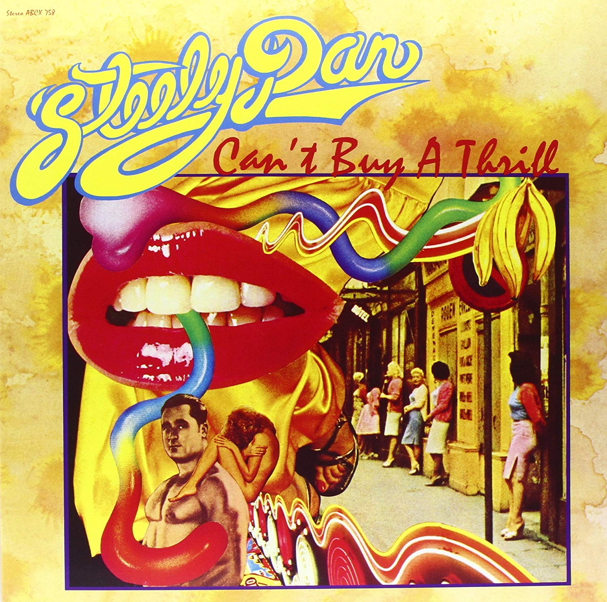
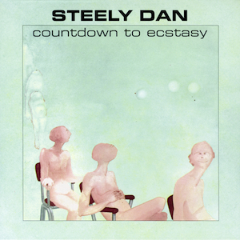
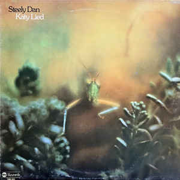
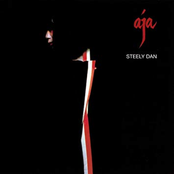
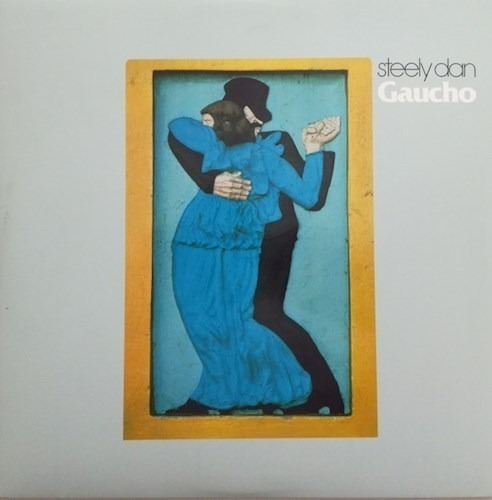
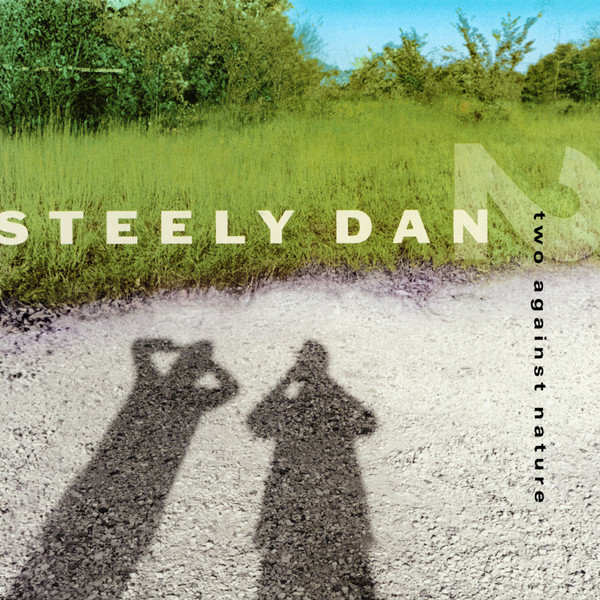
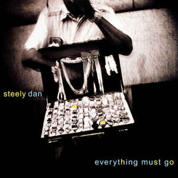

DISCOGRAFIA
- (1972) Can't Buy a Thrill 
- (1973) Countdown To Ecstasy 
- (1974) Pretzel Logic
- (1975) Katy Lied 
- (1976) The Royal Scam
- (1977) Aja 
- (1980) Gaucho 
- (2000) Two Against Nature 
- (2003) Everything Must Go 

Steely Dan es un grupo estadounidense de rock formado en Nueva York en 1972 y cuya música incorpora elementos de jazz, rock, funk, rhythm and blues (R&B) y pop. Su núcleo central estuvo formado por Donald Fagen (n. 1948) y Walter Becker (1950-2017), ambos instrumentistas y compositores. El apogeo de popularidad del grupo tuvo lugar en los años 70. Su música evolucionó para incorporar complejas estructuras de jazz y una gran habilidad musical. El grupo realizó giras entre 1972 y 1974 pero en 1975 pasó a convertirse básicamente en un grupo de estudio. La banda fue famosa por utilizar músicos de sesión en sus grabaciones, como Michael McDonald, Steve Gadd, Larry Carlton, Don Grolnick, Anthony Jackson, Hiram Bullock, Mark Knopfler, Jeff Porcaro, David Paich, David Sanborn, Patti Austin, Lee Ritenour, Wayne Shorter, y otros. Steely Dan estuvo inactivo entre 1981 y 1992, después de que Becker y Fagen tomaran caminos diferentes, pero han vuelto a reunirse regresando en el año 2000 con el lanzamiento de Two Against Nature. La historia del grupo tiene tres etapas: en la primera, desde 1972 hasta 1974, el grupo era una banda convencional de rock que salía de gira y grababa; en la segunda, (1975-años 80) el grupo se convirtió en un grupo puramente de estudio que continuó usando el nombre de Steely Dan, aunque se centraba básicamente en el equipo formado por Becker y Fagen, empleando a músicos de sesión en sus grabaciones. La tercera etapa del grupo es la vuelta por sorpresa de Becker y Fagen a la grabación y actuación en directo durante los años 90, con la banda reconstituida considerada como uno de los grandes grupos de jazz-rock que actúa en directo de forma regular, habiendo lanzado varios aclamados álbumes en directo y en estudio. El 3 de septiembre de 2017 murió Walter Becker.